문자열 주소 대신 상수 길이를 선택하기
중첩 select·PHI로 고른 문자열의 길이를 미리 계산하고 런타임 strlen 호출을 제거한다.
llvm_strlen_pr_presentation.pptx의 전체 내용입니다. 설명·코드·표·검증 기록을 생략하지 않고 옮겼습니다.
- MD성능 측정·회귀 분석 브리핑223246.md
- PPTX발표자료 · 16장 ALLVM_PR223246__strlen.pptx
- PPTX발표자료 · 16장 BLLVM_PR_.pptx
- PPTX발표자료 · 11장llvm_strlen_pr_presentation.pptx
각 자료는 별도의 버전입니다. 같은 주제라도 구현 상태·설명 범위·수치가 다를 수 있습니다.
이 문서의 목차
LLVM PR 발표 / Before
페이지 배치·기호·도식 확인하기

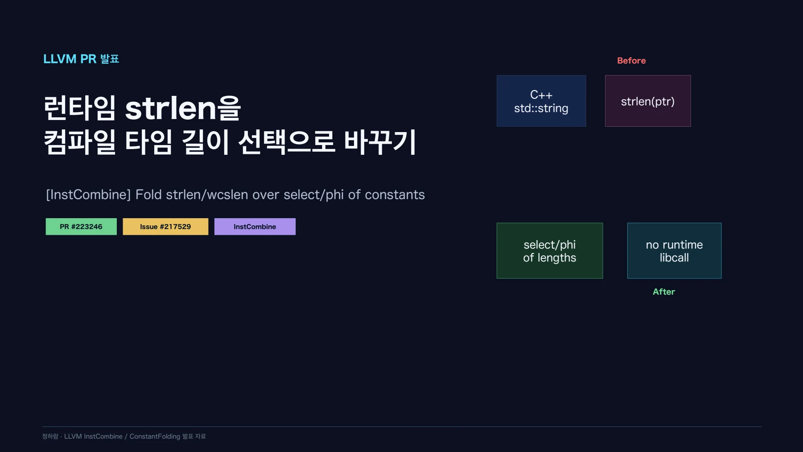
SCRIPT / 목차
페이지 배치·기호·도식 확인하기

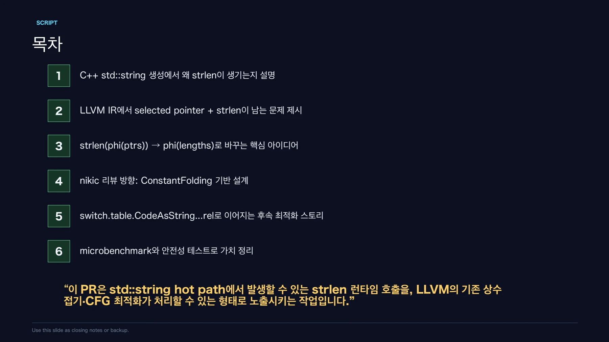
MOTIVATION / 왜 C++ std::string에서 strlen이 나오나?
std::string CodeAsString(StatusCode code) {
switch (code) {
case OK: return "ok";
case Missing: return "missing";
case Timeout: return "timed out!";
}
}페이지 배치·기호·도식 확인하기

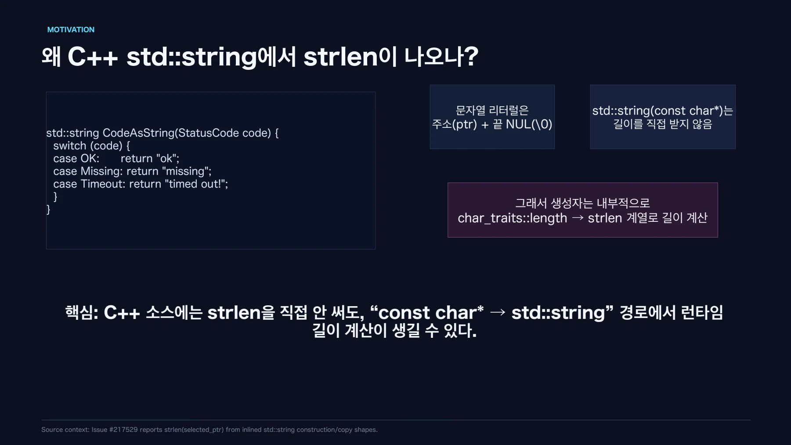
BEFORE / 문제: “포인터를 고른 뒤” strlen을 호출한다
%selected = phi ptr [ @s0, %case0 ],
[ @s1, %case1 ],
[ @s2, %case2 ],
[ @s3, %case3 ]
%len = call i64 @strlen(ptr %selected)
ret i64 %len페이지 배치·기호·도식 확인하기

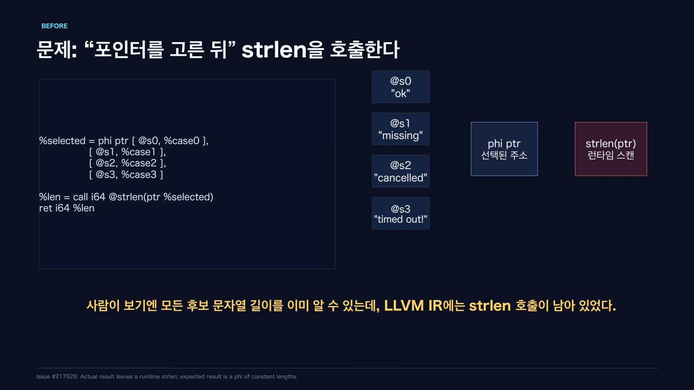
AFTER / 해결: “길이를 미리 계산한 뒤” 길이를 고른다
%len = phi i64 [ 2, %case0 ],
[ 7, %case1 ],
[ 9, %case2 ],
[ 10, %case3 ]
ret i64 %lenstrlen(phi(A, B, C)) → phi(strlen(A), strlen(B), strlen(C)) → phi(2, 7, 9)페이지 배치·기호·도식 확인하기

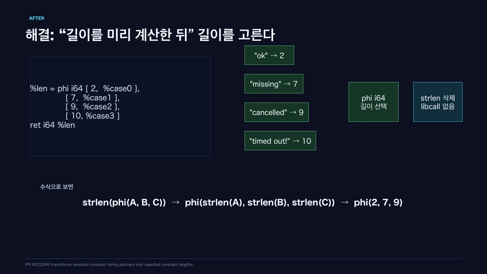
EVIDENCE / 이 최적화가 의미 있는 이유
페이지 배치·기호·도식 확인하기

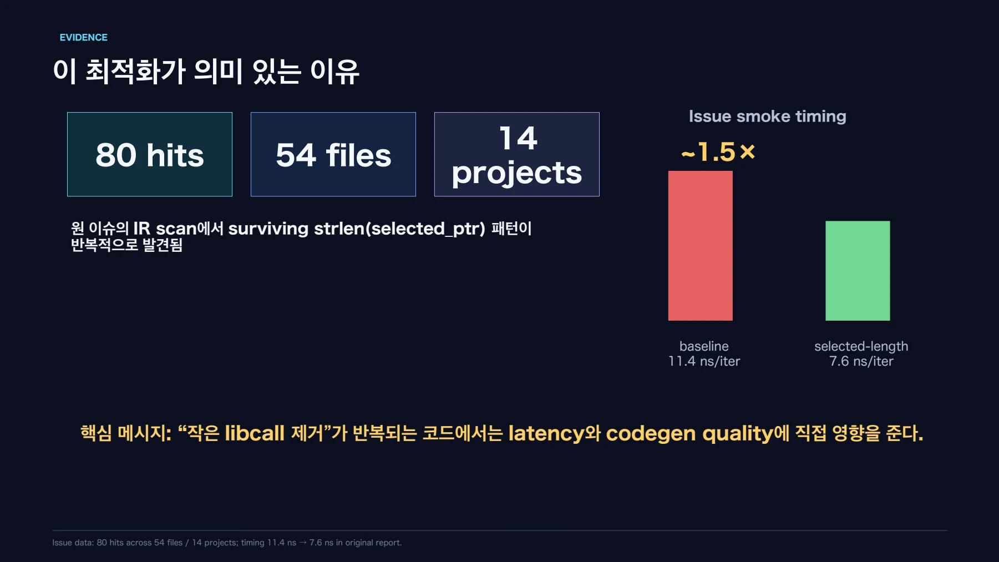
CODEGEN STORY / 그 다음 단계: phi 길이가 switch.table로 더 접힌다
// After InstCombine
%len = phi i64 [2,%case0], [7,%case1], [9,%case2], [10,%case3]
// Later SimplifyCFG-like lowering
@switch.table.CodeAsString[abi:cxx11](StatusCode).rel
= constant [N x i64] [2, 7, 9, 10, ...]
%len = load i64, ptr @switch.table... + index페이지 배치·기호·도식 확인하기

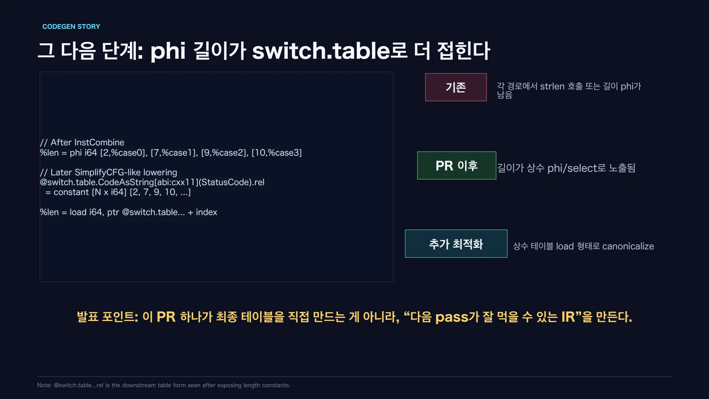
DESIGN / 설계 방향: strlen 전용 패치보다 “기존 fold에서 나오게”
페이지 배치·기호·도식 확인하기

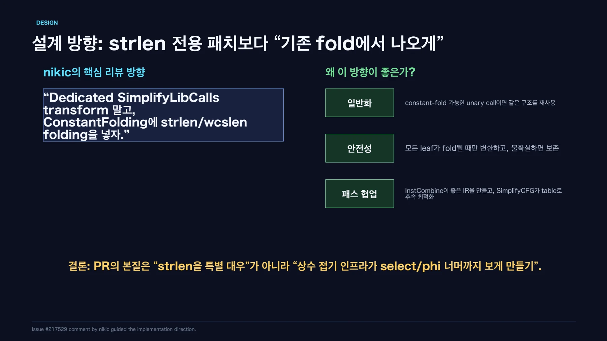
IMPLEMENTATION / PR 구현 구조: 3단계로 이해하면 된다
fold(call, value):
if call(value) can constant-fold:
return constant
if value is select:
return select(cond, fold(T), fold(F))
if value is phi:
return phi(fold(each incoming))
otherwise: fail페이지 배치·기호·도식 확인하기

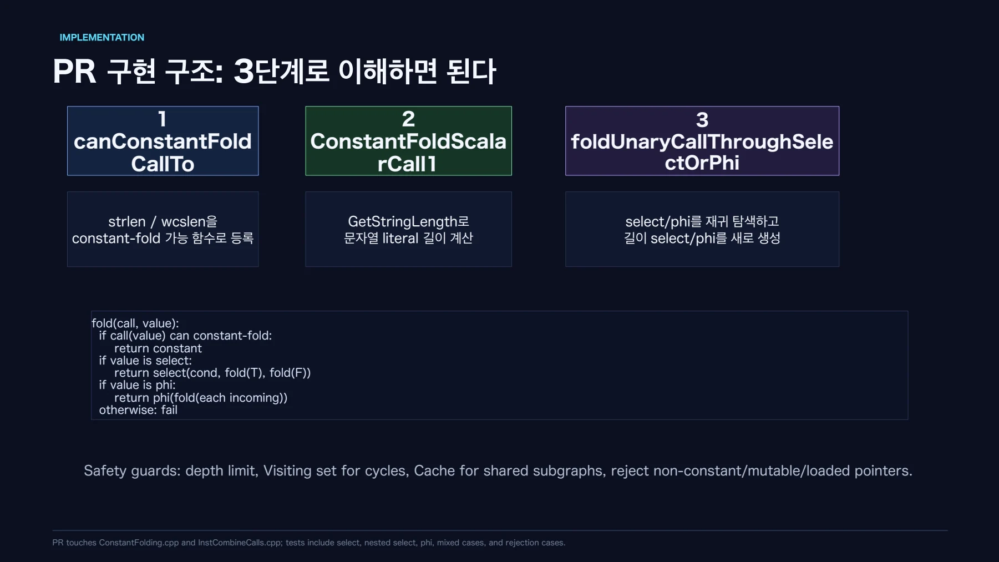
BENCHMARK / 성능 측정: strlen 호출 제거의 미시 효과
페이지 배치·기호·도식 확인하기

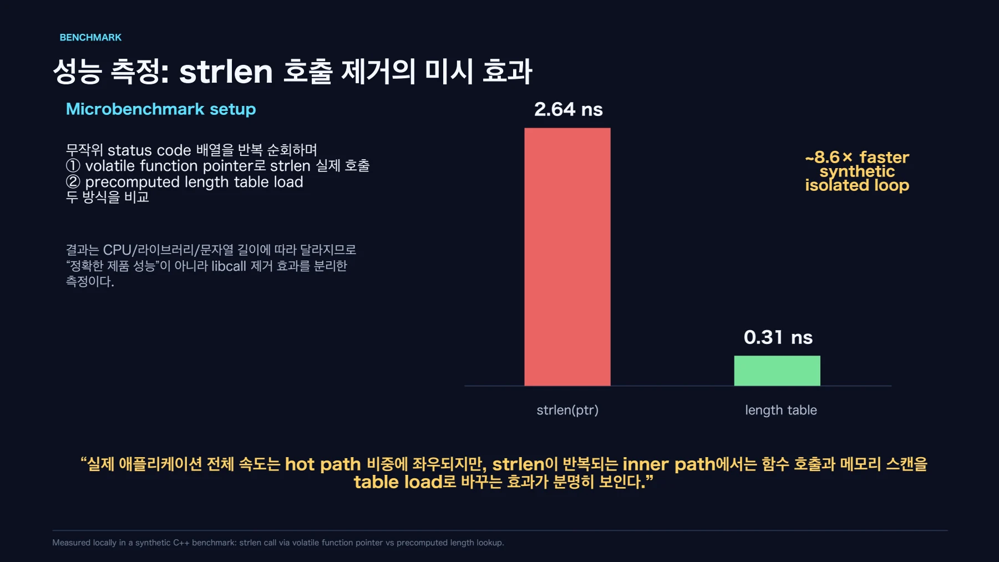
CORRECTNESS / 안전하게 접는 범위와 일부러 안 접는 범위
페이지 배치·기호·도식 확인하기

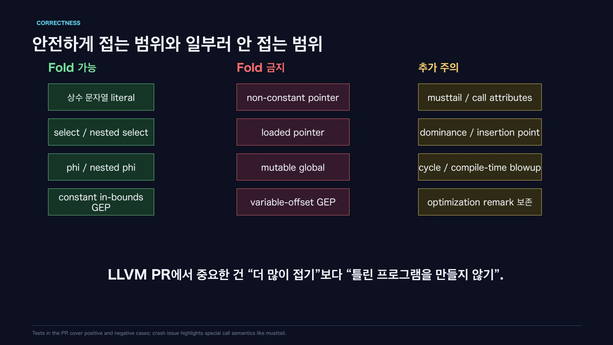
핵심 원리와 편집 주석
어떤 호출을 없애는가
후보 문자열이 모두 상수면 각 후보의 길이를 컴파일할 때 구할 수 있다. 실행 중에는 문자열을 스캔하는 대신 길이 값 자체를 선택한다.
; Before: 주소를 선택한 뒤 길이를 계산한다.
%inner = select i1 %c2, ptr @missing, ptr @cancelled
%p = select i1 %c1, ptr @ok, ptr %inner
%len = call i64 @strlen(ptr %p)
; After: 이미 아는 길이를 선택한다.
%inner.len = select i1 %c2, i64 7, i64 9
%len = select i1 %c1, i64 2, i64 %inner.len단순한 두 리터럴의 select는 기존에도 최적화된다. 이 자료는 중첩 select와 PHI가 새로 처리되는 예제를 구분한다.
구현과 보존 조건
상수 문자열의 평가는 ConstantFolding에서 수행한다. InstCombine은 select·PHI 입력을 따라 결과를 구성한다. strlen 전용 예외 처리보다 기존 상수 접기 체계를 사용하는 설계다.
- 길이를 알 수 없는 동적 입력이 있으면 호출을 유지한다.
- 변경 가능한 전역 문자열은 상수 문자열로 가정하지 않는다.
- 순환을 감지하고 탐색 깊이를 제한한다.
- 평가 결과를 캐시해 중복 탐색을 줄인다.
- wcslen에는 필요한 wchar 크기 정보가 있어야 한다.
- musttail의 직접 반환 조건을 보존한다.
서로 다른 오류의 수정
자료는 Archer의 musttail 크래시 보고와 별도로 발견한 fixpoint 회귀를 구분한다. 핵심 사례 몇 개만 통과한 상태에서도 인접 테스트는 실패할 수 있었다.
호출 결과를 접은 뒤 남은 호출을 작업 목록에서 계속 처리하도록 수정했다. 자료는 19개 관련 테스트 통과와 확장 검증 2,263개 통과·92개 미지원을 기록한다.
8개 테스트 실패는 같은 fixpoint 문제를 검출한 것이다. 이를 독립적인 버그 8개로 세지 않는다. 초기 Markdown의 로컬 수정 상태와 후속 발표의 브랜치 반영 상태도 구분한다.
측정 방법
자료의 측정일은 2026년 9월 15일이다. macOS arm64에서 같은 frontend IR, 부모·PR opt, 같은 llc를 사용했다. O2와 O3는 전체 최적화 파이프라인으로 비교했다.
- 10만 회 준비 실행 뒤 15회 측정의 중앙값을 사용했다.
- 실행 순서를 무작위화했다.
- 런타임 입력과 독립적으로 계산한 checksum을 사용했다.
- 함수별 실행 파일과 별도 드라이버를 사용했다.
- LTO를 사용하지 않고 noinline 조건을 유지했다.
보고된 O2 결과
| 합성 사례 | 이전 ns/호출 | PR ns/호출 | 시간 감소 |
|---|---|---|---|
| 중첩 select | 5.086 | 1.233 | 75.8% |
| switch / PHI | 7.306 | 1.233 | 83.1% |
| C++ string_view | 5.478 | 1.229 | 77.6% |
| C++ 문자열 생성·append·해시 | 102.283 | 93.260 | 8.8% |
측정과 자료의 한계
처음 한 실행 파일에 모은 측정에서는 같은 기계어의 대조군도 느려졌다. 함수를 분리해 다시 측정하자 차이가 줄었다. 작성자는 배치 효과의 원인을 확정하지 않고 최종 발표에 분리 측정값을 사용했다.
벤치마크 원시값과 스크립트의 상대 링크는 첨부 자료에 없는 파일을 가리킨다. 이 사이트는 그 파일을 제공한다고 표시하지 않는다. PR의 현재 상태도 원자료 작성 시점과 구분한다.
문서 전문과 버전
- MD성능 측정·회귀 분석 브리핑223246.md
- PPTX발표자료 · 16장 ALLVM_PR223246__strlen.pptx
- PPTX발표자료 · 16장 BLLVM_PR_.pptx
- PPTX발표자료 · 11장llvm_strlen_pr_presentation.pptx
각 자료는 별도의 버전입니다. 같은 주제라도 구현 상태·설명 범위·수치가 다를 수 있습니다.
관련 이슈와 PR
구현·병합 상태와 측정값은 해당 제출 자료의 작성 시점 기준입니다.